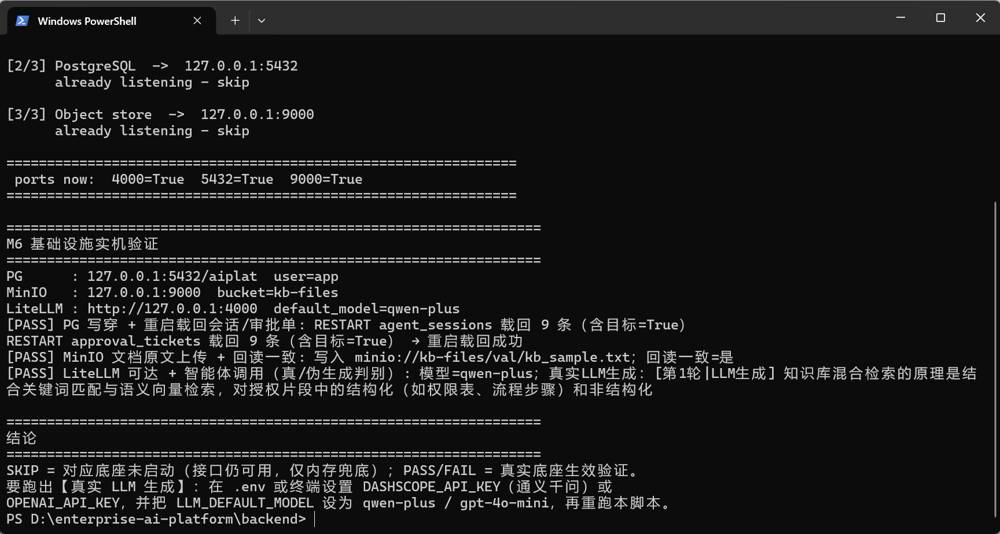

一、交付链路 每段的「证据」都能当场复跑，命令见文末
M0已验收
脚手架 · 先单体后拆容器
FastAPI 单体 + React/Vite/TS；网关中间件注入 X-Caller-Context，前端不可伪造；docker-compose 只跑基础设施。
证据：8 paths 契约落地、CI 三道门禁首次全绿
M4已验收
智能体编排 · 会话记忆
LangGraph 图编排 retrieve → generate；会话归属校验、6 轮注入 / 40 轮滑动窗口、指代消解式 query 改写。
证据：7 项测试 + 跨智能体串记忆隔离、他人访问 403
M5已验收
审批流 · 发布红线
注册自动开审批单；dept_admin 限本部门、重复决策 409；未发布智能体调用一律 403。
证据：9 项测试；契约验证「未发布 invoke 被拦」实测 403
M6已验收
真实底座 · 不再是演示数据
PG 写穿（会话/审批单重启载回）、对象存储原文可回读、LiteLLM 接通义千问真生成；全部优雅降级。
证据：本机实跑 3/3 PASS，第三项为「真实 LLM 生成」
M7已验收
计量闭环 · 会拦人的计费
每次调用落一单账（真 token / 成本 / 延迟 / 真伪生成）；五维聚合出账单；部门配额超限 invoke 直接 429。
证据：9 项测试 + 契约 16 项；PG 已有真实账单行
二、实机证据 本机原生三件套（Docker 守护进程故障，改原生等价路径，接口代码零改动）

2026-11-02 18:23 本机终端实拍：PostgreSQL / 对象存储 / LiteLLM 三项 [PASS]，结论区 [ALL PASS] 3/3，生成标注「真实LLM生成」。
# python scripts/validate_m6.py
[PASS] PG 写穿 + 重启载回会话/审批单
RESTART agent_sessions 载回 10 条（含目标=True）
RESTART approval_tickets 载回 10 条（含目标=True）
[PASS] MinIO 文档原文上传 + 回读一致
写入 minio://kb-files/val/kb_sample.txt；回读一致=是
[PASS] LiteLLM 可达 + 智能体调用
模型=qwen-plus；真实LLM生成：[第1轮|LLM生成] 知识库
混合检索的原理是结合关键词匹配与语义向量检索…
[ALL PASS] 三项底座全部真实生效：3/3 通过。
# node scripts/contract_check.mjs（节选）
✓ 未发布 invoke 被拦（403）
✓ 第二轮记忆改写（query_rewritten=true）
✓ token 落账：入 126 / 出 40
✓ 成本按单价折算：¥0.000181
✓ 生成方式可判别：真实 LLM
✓ 上传后立即可被召回（同一份索引）
三、平台能力现状 「验证方式」列写的是可复跑的动作，不是承诺
| 能力 | 实现要点 | 验证方式（可复跑） | 状态 |
|---|---|---|---|
| 带权召回 | 混合检索（BM25 字符 bigram + 向量）+ RRF 融合 + 父子切分聚合 + 重排；第 18 章单一过滤点在召回阶段剔除越权 | pytest 断言 filtered_out ≥ 1 且不泄漏；CI 跑 Recall@100 ≥ 0.95 门禁；契约实测「召回 6 条 / 过滤 5 条」 |
已验收 |
| 会话记忆 | 归属校验（仅本人）、跨智能体隔离、注入窗口 6 轮 / 保留 40 轮、query 改写做指代消解 | M4 7 项测试；契约第二轮 query_rewritten=true、turn_count=4；会话页可视化上下文预览 |
已验收 |
| 审批与发布 | 注册即开单；平台管理员全局、部门管理员限本部门；终态 409；发布后才可调用 | M5 9 项测试；契约「员工决策 403 → 管理员通过 → published → 可调用」全链路 | 已验收 |
| 持久化 | 会话 / 审批单 / 用量三张表写穿 PG；启动时 load_from_pg 载回；不可达静默降级为内存 |
子进程模拟重启后能载回目标记录；psql 直查 usage_records 有真实行 |
已验收 |
| 真实生成 | 模型网关经 LiteLLM 路由；通义千问 qwen-plus 国内直连；不可达回退确定性 stub 并标记 |
直连百炼兼容端点返回 200；验证脚本标注「真实LLM生成」；账单里 real=true |
已验收 |
| 计量计费 | token 取网关真值、成本按模型单价固化到单；dept/agent/model/user/day 五维聚合；RBAC 收敛到本人/本部门/全量 | M7 9 项测试；契约 16 项；PG 实查 32 单 / 2757 入 token / ¥0.0137 | 已验收 |
| 知识入库 | multipart 上传（txt/md/csv/json…）→ 对象存储 + 落库 + 入同一份检索索引；删除三处同步清理 | 契约：上传 → 立即可被召回到同一 doc_id → 删除后不再召回；越权 scope 与超大/非法类型分别 403 / 413 / 415 | 已验收 |
| 模型治理 | 注册表带单价/能力/上下文；平台管理员可启停，网关侧即时生效，业务代码零改动 | 契约：员工 PATCH 403 → 管理员停用 → 默认列表不再返回 → 再启用 | 已验收 |
四、治理门禁 三道自动闸门 + 两条业务红线，越线直接失败而不是告警
GATE 01
backend-build
全量 pytest（当前 55 项）+ 应用可导入；任一失败即阻断合并。
GATE 02
rag-recall-gate
第 36 章：Recall@100 ≥ 0.95，检索质量下降不允许合入。
GATE 03
ml-objective-gate
第 37 章：客观评测门槛（不依赖 LLM-as-judge，可复现）。
RED LINE 01
未发布不可调用
第 35 章：智能体必须过评审发布，/agent/invoke 否则 403。
RED LINE 02
配额超限即拦截
第 25 章：部门 30 天 token 封顶，超限调用 429 —— 计费在链路上，不在报表里。
RED LINE 03
越权不进上下文
第 18 章：过滤点在召回阶段，越权片段连模型上下文都进不去。
五、已知边界与下一步 先说清楚哪里还不够，再谈规模化
| 边界 | 现状与影响 |
|---|---|
| 内存为主存 | 会话/审批/计量的主存仍在进程内，PG 是副本。单实例够用，多副本需拆 Redis/PG 主存 —— 上生产前必须做。 |
| 对象存储替代 | MinIO 官方已下架免授权 Windows 二进制，本机用 S3 兼容服务验证；object_store.py 接口未变，换真 MinIO/OBS 只改配置。 |
| 向量库未上 | Qdrant 仍是内存索引（ensure_qdrant_collection 已留口），万级文档以上需切真向量库。 |
| 前端权限 | 目前靠接口 403 兜底，未做路由级守卫与按钮级隐藏的完整矩阵。 |
- M8 试点：选 1 个部门、1 个真实知识库（200–500 篇）跑两周，产出首次真实 Recall 与成本曲线。
- 测试扩容：评测集从当前规模扩到 200 条，覆盖跨部门越权、长文档、多轮指代三类硬样本。
- 成本护栏：配额从「部门月封顶」细化到「智能体日预算 + 80% 预警」，与账单页打通。
- 交付形态：先单体容器化（Dockerfile 已备），试点稳定后再按网关/运行时/检索拆三容器。
- 协作：远程仓库已开协作者权限，PR 走 CI 门禁 + 分支保护，
COLLAB_GUIDE.md可直接发给同事。